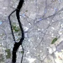

Benchmark / Near-lossless / emit-l2a-285 / emit-l2a-285-07
emit-l2a-285-07
cairo · 2023-06-26 · sample details

Metadata
| id | emit-l2a-285-07 |
|---|---|
| source | NASA/EMIT/L2A/RFL (EMIT L2A Estimated Surface Reflectance V001) |
| asset | NASA/EMIT/L2A/RFL/EMIT_L2A_RFL_001_20230626T084016_2317706_008 |
| crs | EPSG:4326 |
| transform |
|
| datetime_start | 2023-06-26T08:40:16.000Z |
| datetime_end | 2023-06-26T08:40:16.000Z |
| bands | reflectance_0 to reflectance_284, 285 planes |
| shape | 285x128x128 |
| dtype | float32 |
| unit | reflectance |
| scale | 1 |
| offset | 0 |
| input_sha256 | 0bad0d55f77cdd5fe658638597a9b0bf63dbd2a9e0a9abe1d78d7fa327fc40b5 |
| site | cairo |
| regime | urban |
| lon | 31.24 |
| lat | 30.05 |